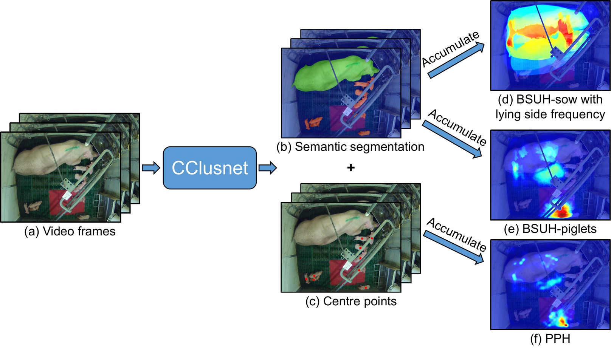
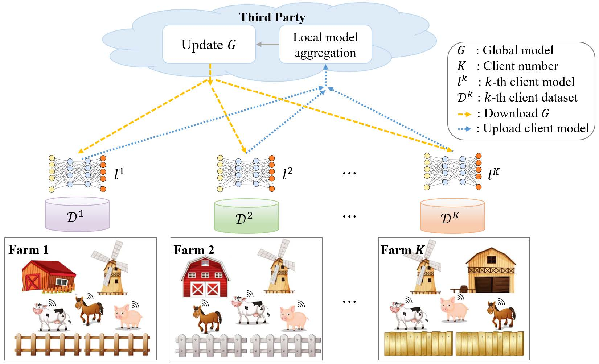
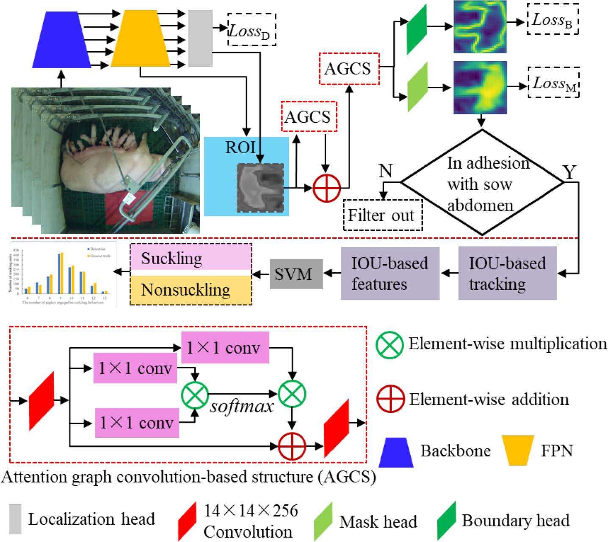
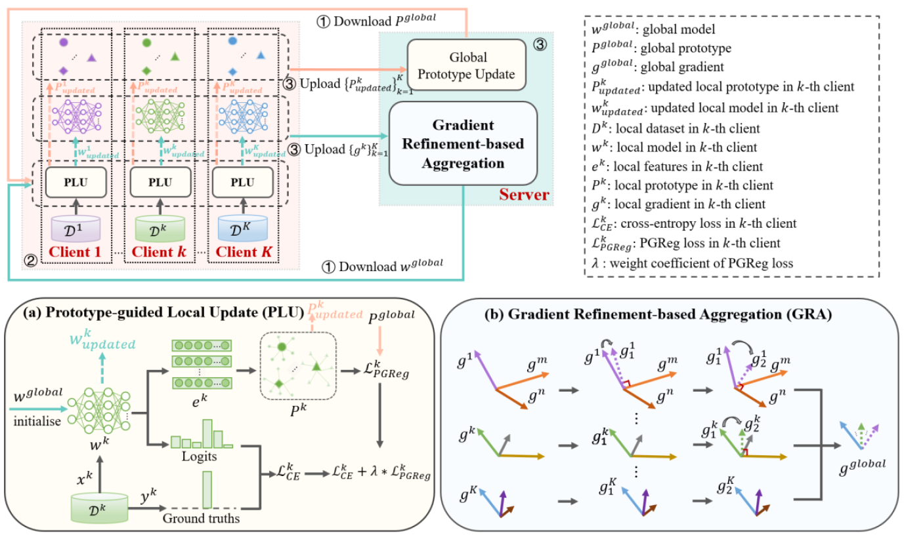
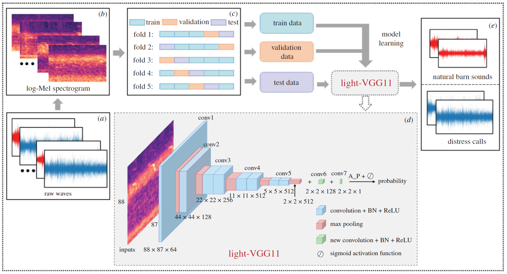
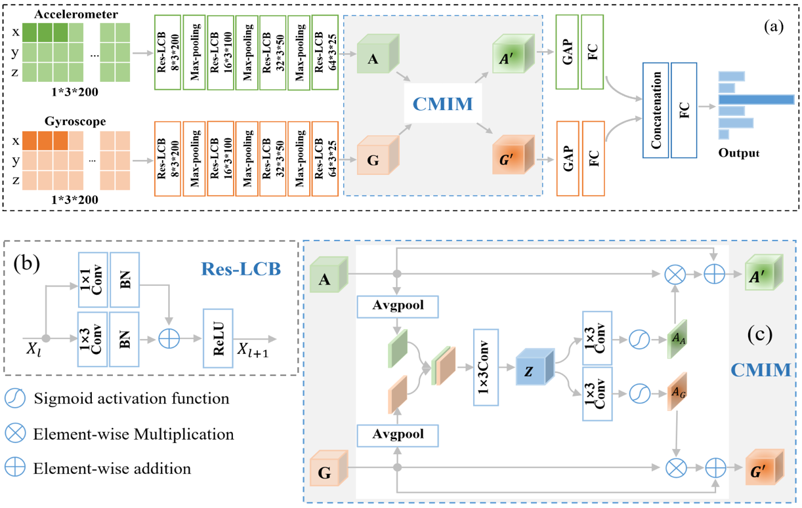
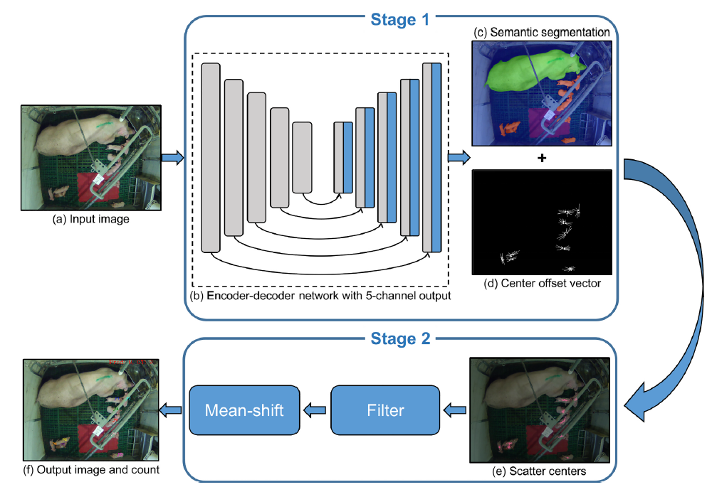

Axiu Mao毛阿秀Ph.D. Student (2019-Now)P/T Research Assistant (2021-Now)
Department of Infectious Diseases and Public Health, |
|


I am currently a third year (2021-2022) Ph.D. student in the SAM Lab, Department of Infectious Diseases and Public Health, City University of Hong Kong (CityU) and supervised by Prof. Kai Liu.
My research interests include animal activity recognition, sound recognition, wearable sensors, machine learning and deep learning.
News
[Sep 2023] Two papers accepted by USPLF2023 as oral presentation
[Aug 2022] I give a presentation in ECPLF2022
[Aug 2022] One paper accepted by ANIMALS
[Jun 2022] One paper accepted by COMPAG
[May 2022] One paper accepted by J.R.Soc.Interface
[Apr 2022] Three papers accepted by ECPLF2022 as oral presentation
[Oct 2021] Outstanding Graduate Student Paper and Presentation Award at ISAEW2021
[Oct 2021] I give a presentation in ISAEW2021
[Oct 2021] One paper accepted by COMPAG
[Sep 2021] One paper accepted by SENSORS
[Jul 2021] One paper accepted by ASABE2021
[Apr 2021] Two papers accepted by ISAEW2021 as oral presentation
[Oct 2020] One paper accepted by ACPLF2020
[Sep 2020] I pass my QE and QR
[Sep 2019] I join Prof. Liu's lab
Publications [Google Scholar]
|  | Occlusion resistant spatiotemporal analysis of pig distribution pattern in farrowing pens using centrer clustering network Endai Huang, Axiu Mao, Haiming Gan, Kai Liu. 2022 European Conference on Precision Livestock Farming (ECPLF 2022), Aug, 2022 |
|  | Uniting farms: federated learning for sensory-based animal activity recognition Axiu Mao, Endai Huang, Haiming Gan, Kai Liu. 2022 European Conference on Precision Livestock Farming (ECPLF 2022), Aug, 2022 |
|  | Automated detection and analysis of piglet suckling behaviour using high-accuracy amodal instance segmentation Haiming Gan, Mingqiang Ou, Cheryl Natalie SZE, Axiu Mao, Kai Liu, Yueju Xue. 2022 European Conference on Precision Livestock Farming (ECPLF 2022), Aug, 2022 |
|  | FedAAR: A Novel Federated Learning Framework for Animal Activity Recognition with Wearable Sensors Axiu Mao, Endai Huang, Haiming Gan, Kai Liu. |
| Automated detection and analysis of piglet suckling behaviour using high-accuracy amodal instance segmentation Haiming Gan, Mingqiang Ou, Chengpeng Li, Xiarui Wang, Jingfeng Guo, Axiu Mao, Maria Camila Ceballos, Thomas D. Parsons, Kai Liu, Yueju Xue. Computers and Electronics in Agriculture (COMPAG), Aug, 2022 |
|
|  | Automated identification of chicken distress vocalizations using deep learning models Axiu Mao, Claire S. E. Giraudet, Kai Liu, Inês De Almeida Nolasco, Zhiqin Xie, Zhixun Xie, Yue Gao, James Theobald, Devaki Bhatta, Rebecca Stewart, Alan G. McElligott. Journal of Royal Society Interface (J.R.Soc.Interface), Jun, 2022 |
|  | Cross-Modality Interaction Network for Equine Activity Recognition Using Time-Series Motion Data Axiu Mao, Endai Huang, Weitao Xu, Kai Liu. 2021 International Symposium on Animal Environment and Welfare (ISAEW 2021), Oct, 2021 |

|
A Key Frame Selection Method for Creating Deep Learning Training Set in Animal Research Involving Time-Series Video Data Endai Huang, Axiu Mao, Haiming Gan, Kai Liu. 2021 International Symposium on Animal Environment and Welfare (ISAEW 2021), Oct, 2021 |
|  | Center Clustering Network Improves Piglet Counting Under Occlusion Endai Huang, Axiu Mao, Haiming Gan, Maria Camila Ceballos, Thomas D. Parsons, Yueju Xue, Kai Liu. Computers and Electronics in Agriculture (COMPAG), Oct, 2021 |
| Cross-Modality Interaction Network for Equine Activity Recognition Using Imbalanced Multi-Modal Data Axiu Mao, Endai Huang, Haiming Gan, Rebecca S. V. Parkes, Weitao Xu, Kai Liu. |
|

|
Capacity Limit of Deep Learning Methods on Scenarios of Pigs in Farrowing Pen under Occlusion Endai Huang, Axiu Mao, Maria Camila Ceballos, Thomas D. Parsons, Kai Liu. American Society of Agricultural and Biological Engineers (ASABE 2021) , Jul, 2021 |

|
Deep learning-based assessment of laying-hen feather conditions using color and thermal images Endai Huang, Axiu Mao, Kai Liu, Yueju Xue. 2nd Asian Conference on Precision Livestock Farming (ACPLF 2020), Oct, 2020 |
Honors & Awards
Outstanding Graduate Student Paper and Presentation Award at ISAEW, 2021
Outstanding Graduates of Zhejiang Province, 2019
Meritorious Winner, Mathematical Contest in Modeling (MCM), 2018
First Prize, 10th National Mathematics Competition, 2018
First Prize, physics innovation competition in zhejiang province, 2018
First Prize, Higher Mathematics competition in zhejiang province, 2018
First Prize, National University Mathematical Modeling Competition in Zhejiang Competition Area, 2017